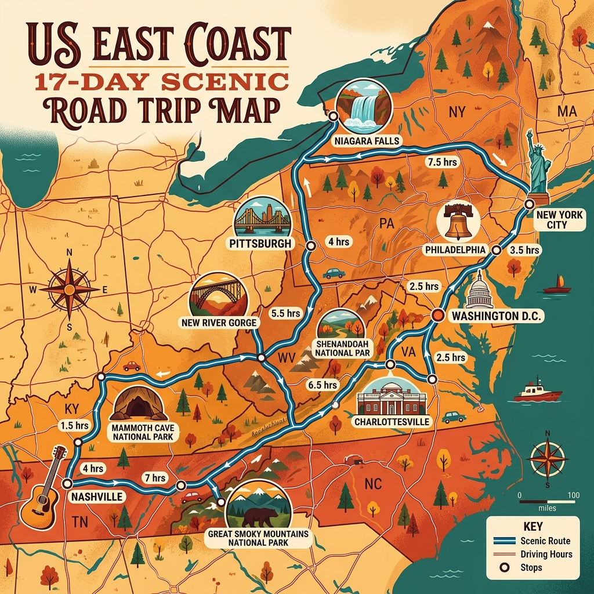

17 天
旅行總天數 (9/4-9/20)
定點慢遊據點
連住 2~4 晚，零折返高效路線
2 ~ 4 hrs
每日平均舒適開車時數
4 大國家公園
仙納度/大烟山/猛獁洞/新河峽谷
📅 美東 17 天公路自駕「每日詳細行事曆與時程規劃」
💡 關於當天往返與住宿評估：
本行程採用「半定點慢遊（以 2~4 晚連住為主）」，在 D.C.、指湖區與大煙山地區連住不換飯店，當天往返距離皆在 30~50 分鐘內，完全不會浪費拉車時間！而針對尼加拉瀑布或納什維爾等較遠城市則採順路向前入住，達到「行李搬運最少、車程最順暢」的完美平衡！
17 天公路旅行車程與亮點流程圖
美國東岸自駕繪製地圖
華盛頓 D.C. ➔ 北至尼加拉瀑布 ➔ 南至納什維爾 ➔ 返回華盛頓 D.C.

1. 定點連住慢遊
華盛頓 D.C. 連住 4 晚、指湖區連住 3 晚、尼加拉瀑布連住 2 晚！每天輕鬆出門渡假，完全免去天天換飯店拉車的痛苦。
2. 開車與過路費 (E-ZPass)
美東（如 PA、NY、VA）有許多電子收費道路。租車時建議開通租車公司的 E-ZPass 通行證，省去人工排隊的時間。
3. 門票與導覽預約 (Advance Tickets)
- 落水山莊 (Fallingwater)：必須提前 1～2 個月於官網預約導覽門票。
- 霧中少女號 (Maid of the Mist)：可線上預先購票。
- 美國國會大廈 (U.S. Capitol)：建議提前於官網預約免費參觀時段。
4. 國家公園通行證 (Pass)
售價 $80 美金 的 America the Beautiful Pass 涵蓋仙納度國家公園與此行程聯邦景點，非常划算。